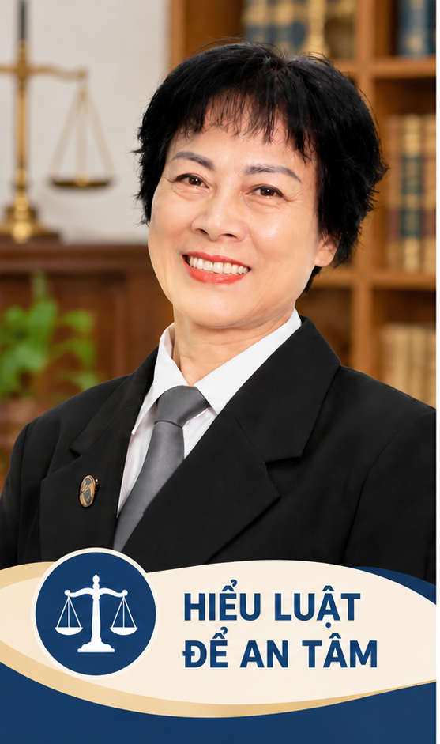
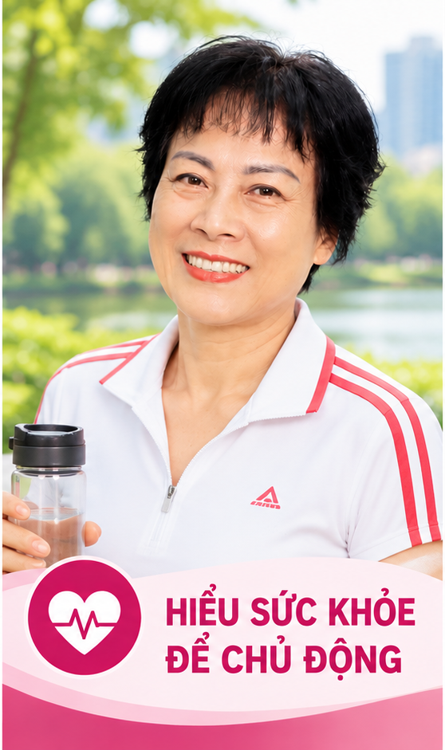

Pháp luật
Hiểu luật để an tâm. Tài sản, thừa kế, di chúc, đất đai, hôn nhân và gia đình; những tình huống gần đời sống.
Khám phá chuyên mục →“Mỗi ngày hiểu thêm một điều, chủ động thêm một bước.”
Hơn 40 năm trong lĩnh vực pháp luật là nền tảng để tôi tiếp tục học hỏi, chia sẻ kiến thức hữu ích và cùng cộng đồng sống chủ động hơn mỗi ngày.

Từ tư duy pháp lý, đến thực hành sức khỏe và học AI — chia sẻ kiến thức để ứng dụng được vào cuộc sống.

Hiểu luật để an tâm. Tài sản, thừa kế, di chúc, đất đai, hôn nhân và gia đình; những tình huống gần đời sống.
Khám phá chuyên mục →
Hiểu sức khỏe để chủ động. Dinh dưỡng, vận động, thói quen tốt, bồi dưỡng Thân – Tâm – Trí.
Khám phá chuyên mục →Hiểu AI để thích nghi. Hướng dẫn từng bước cho người mới, đặc biệt người trưởng thành và người lớn tuổi.
Khám phá chuyên mục →33 năm làm Kiểm sát viên và hơn 10 năm hành nghề Luật sư giúp tôi hình thành sự cẩn trọng, tư duy phân tích và tinh thần trách nhiệm với con người.
Trong giai đoạn mới, tôi tiếp tục học AI và tìm hiểu chăm sóc sức khỏe chủ động để cùng chia sẻ, cùng thực hành, cùng tạo giá trị.
Đọc câu chuyện của tôi →Mỗi chủ đề mở ra một hướng học hỏi, một bước thực hành.
Gợi mở những câu hỏi về ý chí người để lại tài sản, hồ sơ và việc trao đổi trong gia đình.
Đến chuyên mục di chúc →Quan sát thói quen ăn uống, vận động và giấc ngủ, bắt đầu bằng việc nhỏ mỗi ngày.
Đến chuyên mục dinh dưỡng →Bắt đầu từ một việc cụ thể, viết câu hỏi rõ ràng, kiểm tra kết quả rồi lưu lại để dùng sau.
Xem hướng dẫn khởi đầu →“Luật sư Nguyễn Yến là một trong số rất ít các luật sư đổi vai từ vai trò buộc tội sang vai trò gỡ tội hết sức mềm mại và nhân văn.”
Luật sư Hoàng Văn Hướng – Trưởng Văn phòng Luật sư Hoàng Hưng, Đoàn Luật sư thành phố Hà Nội.
Xem đầy đủ lời nhận xét →
Góc âm nhạc đã có đủ ba video karaoke thật; mở trang Âm nhạc để thưởng thức.
Tình yêu và trách nhiệm với nghề luật sư.
Lời nhắc sống tích cực, bền bỉ và nâng đỡ chính mình.
Gửi lời tri ân thầy Trần Khánh Tư qua âm nhạc.
Tìm hiểu các hoạt động cộng đồng, trao đổi về pháp luật, chăm sóc sức khỏe và cách ứng dụng AI phù hợp với đời sống.